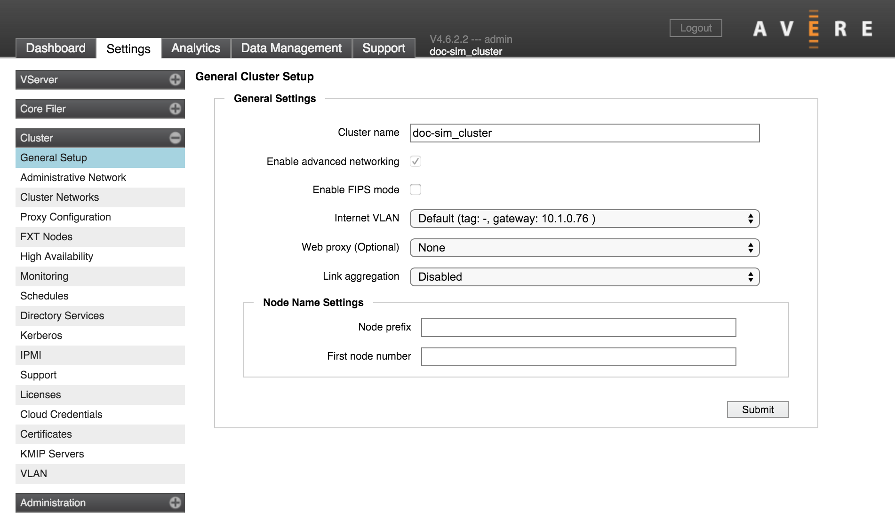

Cluster > General Setup
The first page in the Cluster section has basic options that affect the entire cluster.
Cluster Name
Use this setting to change the name for the cluster.
A cluster name must meet these criteria:
- Length of 1 to 16 characters
- Can include letters, numbers, and the dash (-) and underscore (_) characters
- Must not include other punctuation or special characters
To change the cluster’s name, enter a new value in the field and click Submit. Note that you cannot revert the name change after submitting it; however, you can immediately change the name again to its previous value.
Note
If you have configured SMB access and are using the cluster (NetBIOS) name as the name of the SMB server, changing the cluster name does not change the SMB server name. The Avere SMB service continues to use the server name listed on the CIFS configuration page.
Allowing Nodes to Join the Cluster Automatically (legacy systems only)
In some configurations, an option labeled Allow unconfigured FXT nodes to join this cluster appears underneath the cluster name setting.
This feature is no longer available in Avere OS, but the setting still appears on clusters that had the feature enabled before upgrading the software.
Caution
If you unselect this checkbox, you will not be able to re-enable the feature.
This feature was designed to simplify cluster creation by allowing new nodes to join a cluster automatically. If using this feature, be careful to avoid exposing the cluster to nodes that should not join the cluster.
Enabling Advanced Networking (legacy systems only)
Note
The Advanced Networking feature is enabled by default on new clusters created in Avere OS 4.5 or later. You cannot disable advanced networking after it has been turned on for a cluster.
The Avere OS Advanced Networking feature activates additional network customization options, including the following features:
- Cluster components are connected with virtual local area networks (VLANs). You can create multiple VLANs to handle different types of traffic, and designate which vlan handles specific IP address ranges.
- Forwarding Information Base (FIB) tables can be used to route traffic dynamically.
- Link aggregation and port groups can be used to customize how ethernet ports handle various types of traffic.
- Administrators can configure multiple IP address ranges for the management, cluster, and vserver networks, instead of only one. This feature enables the use of discontinuous IP addresses in one network group.
To enable advanced networking:
- Check the Enable Advanced Networking box. A pop-up dialog appears reminding you that you cannot disable this setting, and that client access might be interrupted while changes are made.
- Click OK to proceed.
Clusters with advanced networking turned on have a VLAN settings page in the Cluster category. You might need to refresh your browser page before the new page appears in the Avere Control Panel.
Learn more about advanced networking features in these documents:
Enabling FIPS-Compliant Encryption Mode
The FIPS Mode setting allows you to restrict the type of encryption used in the cluster to only NIST-validated cryptographic algorithms. (FIPS stands for Federal Information Processing Standard, which defines validation procedures.) This setting is disabled by default.
The FIPS mode setting affects the entire cluster.
Note
FIPS mode is not active until after the cluster is restarted with this setting turned on. Changing this setting requires a cluster-wide restart.
The Avere FXT core cryptographic module has been validated for FIPS 140-2 Level 1 standard. Cluster communication uses OpenSSL certificate #1747 for encrypting objects and creating TLS/SSL connections to core filers.
When FIPS mode is active, weaker cryptographic algorithms (like RC4) may not be used. To minimize the impact on hardware CPUs, the AES-NI systems built in to modern processors are used to provide encryption and decryption.
Important
Some cloud storage services do not use FIPS-compliant cryptographic algorithms by default. A cluster that uses FIPS mode cannot communicate with these cloud core filers.
Make sure that all of your core filers have been added to the cluster and are configured with appropriate cryptographic settings before turning on FIPS for the cluster.
Changing the FIPS Mode Setting
To enable or disable FIPS mode, click the Enable FIPS Mode checkbox to select or clear it, and then click the Submit button at the bottom of the page.
FIPS mode is applied cluster wide, and changing the setting requires a cluster-wide restart. When you submit a setting change, the confirmation dialog gives you the option to restart the cluster immediately.
If you prefer to reboot the cluster manually, use the System Maintenance page in the Administration section.
Internet VLAN
The Internet VLAN selector lets you select which local network the cluster uses to communicate with the external internet.
To add a cluster VLAN, use the VLAN settings page.
This setting is not available if Advanced Networking is disabled.
Setting a Web Proxy
Use the Web Proxy menu to choose among the proxy servers configured in your cluster network, or choose none.
This control only allows you to switch configurations; to set up web proxy servers, use the Proxy Configuration page.
Link Aggregation
This control lets you turn on link aggregation, and choose either Link Aggregation Control Protocol (LACP) or static aggregates. Link aggregation is disabled by default.
Note
In most cases, enabling link aggregation for a cluster requires configuration setting changes on your network switch. Consult the documentation for your switch, or contact Avere Global Services for more information.
To turn on link aggregation for the cluster, use the drop-down Link Aggregation menu to select LACP or Static.
The type of link aggregation depends on your network’s configuration. Choose LACP if your network uses dynamic link aggregation as specified by IEEE 802.1AX-2008 (formerly 802.3ad); choose Static if your network is configured for static aggregation.
Link Aggregation Configurations
Depending on the specific hardware, an FXT node typically includes two or four 10GB ports, two or four 1GB ports, and two 1GB management ports (e0a and e0b). Avere OS uses the 10Gb ports preferentially for all traffic, with the 1Gb ports in reserve.
How ports are aggregated depends on whether or not the Use 1 Gb management network option is selected on the Administrative Network page. When the management network setting is enabled, the two 1Gb management ports are allocated to a separate aggregate reserved for management traffic. The 10Gb ports are collected in a single aggregate that handles client/cluster traffic (a common practice is to split the 10Gb ports among multiple network switches to provide failover if one switch goes down). The remaining 1Gb ports form an aggregate used if all of the 10Gb ports fail.
When the management network setting is disabled, the 10Gb aggregate handles management traffic as well as client/cluster traffic, and all of the 1Gb ports are allocated to a single aggregate that is used for failover.
Customizing Node Names
The Node Name Settings section of the General Cluster Setup page lets you configure automatic node naming. Customizing these settings is optional.
If you set a prefix and numbering scheme, node names are automatically assigned as each node joins the cluster. The names are constructed by combining the node prefix with a node ID number.
Changing this setting does not automatically rename existing cluster nodes.
You can change an individual node name from its Node Details page.
Node Name Prefix and Number Format
Use the Node Prefix field to enter the prefix name and, optionally, set the number of digits in the node ID number.
The prefix text is the first part of each node name.
Optionally, use the pound sign character (#) at the end of the prefix text to set the number of digits used in the node ID number. If you do not set the number of digits, ID numbers are assigned sequentially without leading zeroes.
For example, if you want all of the FXT nodes to be named tiered-ID_number, with three digits in the number, enter tiered-### in the Node Prefix field.
Nodes in this cluster would be named tiered-001 or tiered-020, instead of tiered-1 or tiered-20.
First Node Number
Use the First Node Number field to specify the number for the first node in the cluster. This setting is optional. Additional nodes in the cluster are numbered sequentially from the specified number.
For example, if you specify 10 as the first node number with the prefix tiered-, nodes are named tiered-10, tiered-11, and so on.